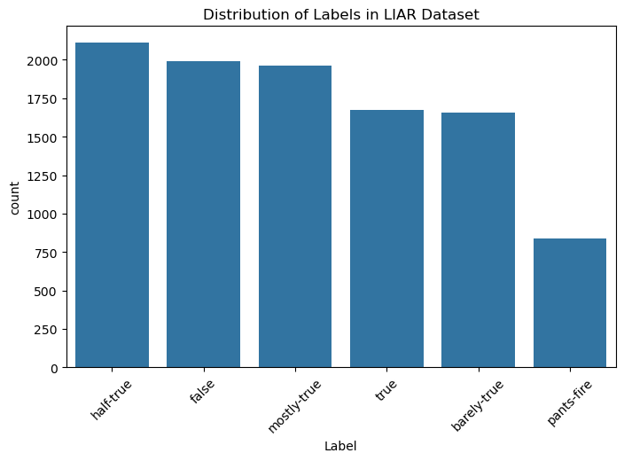
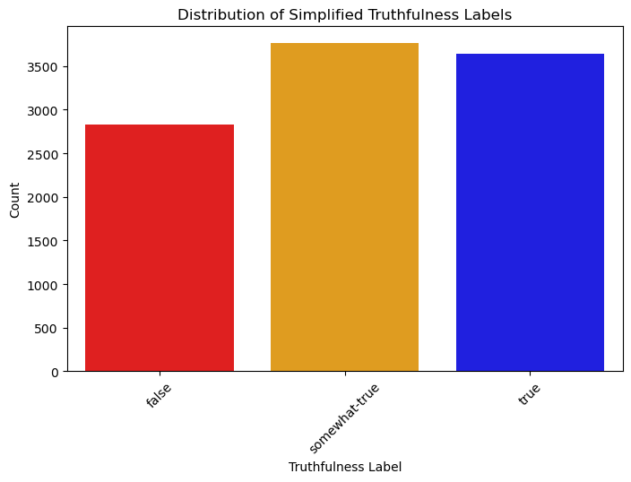
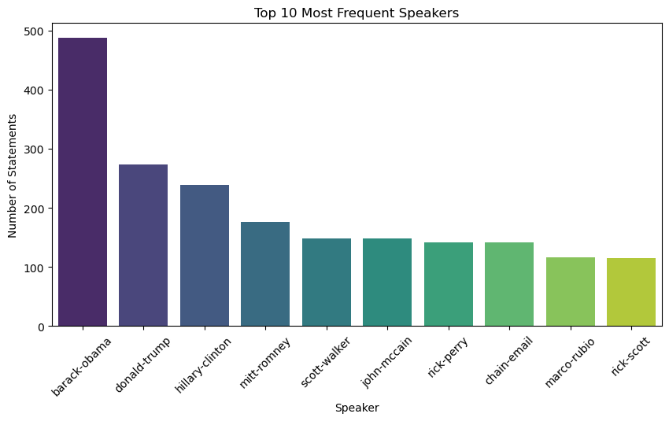
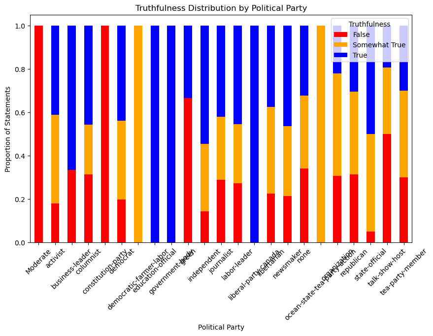
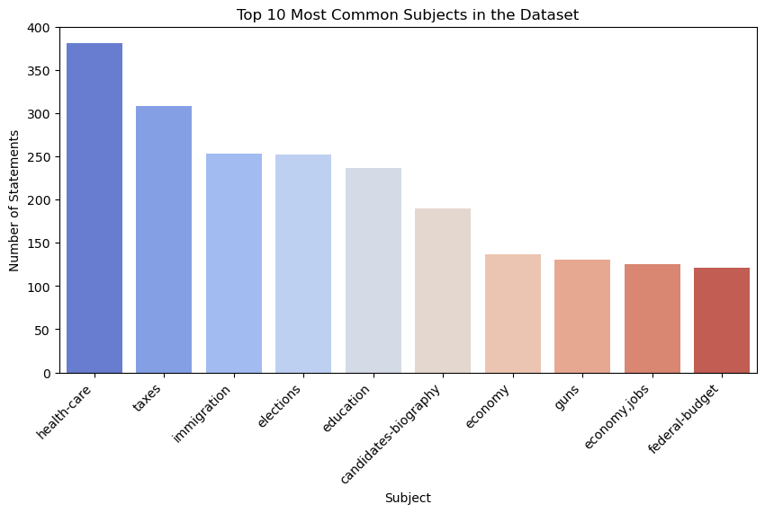
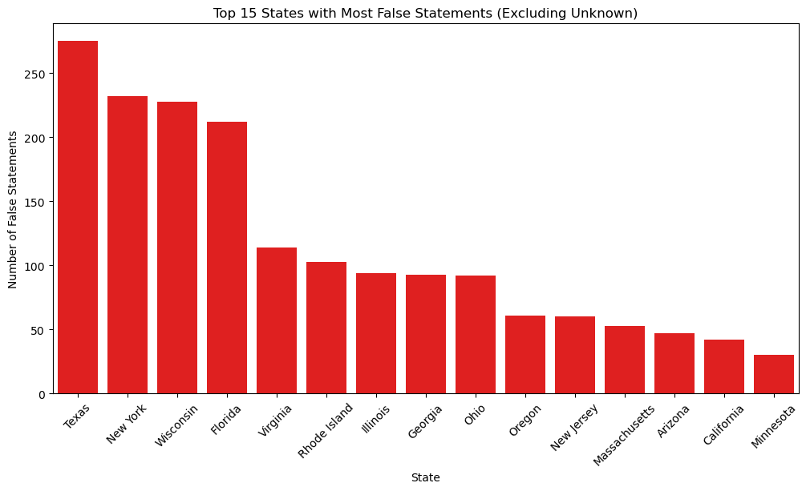
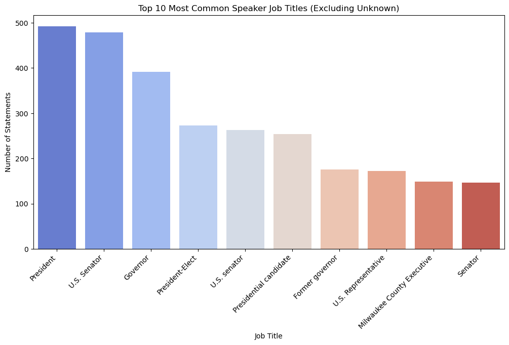
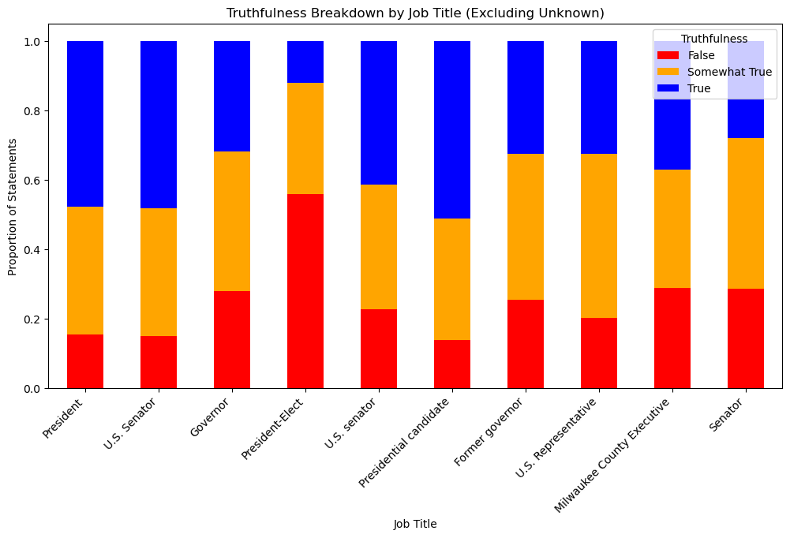

import pandas as pd
import numpy as np
import re
import gensim
from gensim.models import Word2Vec
from sklearn.feature_extraction.text import TfidfVectorizer
from sklearn.preprocessing import LabelEncoder, StandardScaler, OneHotEncoder
from sklearn.linear_model import LogisticRegression
from sklearn.svm import SVC
from sklearn.ensemble import RandomForestClassifier
from sklearn.metrics import accuracy_score, classification_report
from sklearn.model_selection import train_test_split, GridSearchCV
from scipy.sparse import hstack
import matplotlib.pyplot as plt
import seaborn as sns
from wordcloud import WordCloud
from sklearn.impute import SimpleImputerFake News Classification with NLP
Load and Preprocess Data
# Load dataset
train_df = pd.read_csv("liar_dataset/train.tsv", delimiter="\t", header=None)
test_df = pd.read_csv("liar_dataset/test.tsv", delimiter="\t", header=None)
# Define column names
column_names = [
"ID", "Label", "Statement", "Subject", "Speaker", "Speaker_Job",
"State", "Party", "Barely_True_Count", "False_Count", "Half_True_Count",
"Mostly_True_Count", "Pants_On_Fire_Count", "Context"
]
train_df.columns = column_names
test_df.columns = column_names
# Handle NaNs
numeric_features = ["Barely_True_Count", "False_Count", "Half_True_Count", "Mostly_True_Count", "Pants_On_Fire_Count"]
train_df = train_df.dropna(subset=numeric_features)
test_df = test_df.dropna(subset=numeric_features)
categorical_features = ["Speaker", "Speaker_Job", "State", "Party", "Subject", "Context"]
train_df[categorical_features] = train_df[categorical_features].fillna("Unknown")
test_df[categorical_features] = test_df[categorical_features].fillna("Unknown")Feature Engineering
# Preprocessing function for statements
def preprocess_text(text):
text = text.lower()
text = re.sub(r'[^a-z\s]', '', text) # Remove punctuation
return text
train_df["Processed_Statement"] = train_df["Statement"].apply(preprocess_text)
test_df["Processed_Statement"] = test_df["Statement"].apply(preprocess_text)
# Simplify labels
label_mapping = {
"true": "true", "mostly-true": "true",
"half-true": "somewhat-true", "barely-true": "somewhat-true",
"false": "false", "pants-fire": "false"
}
train_df["Simplified_Label"] = train_df["Label"].map(label_mapping)
test_df["Simplified_Label"] = test_df["Label"].map(label_mapping)Exploratory Data Analysis (EDA)
# Plot label distribution
plt.figure(figsize=(8, 5))
sns.countplot(data=train_df, x="Label", order=train_df["Label"].value_counts().index)
plt.title("Distribution of Labels in LIAR Dataset")
plt.xticks(rotation=45)
plt.show()
# Statement length column
train_df["Statement_Length"] = train_df["Statement"].apply(lambda x: len(str(x).split()))
# Color mapping for truthfulness
truthfulness_colors = {"false": "red", "somewhat-true": "orange", "true": "blue"}
# Label Distribution Analysis
plt.figure(figsize=(8, 5))
sns.countplot(data=train_df, x="Simplified_Label", order=["false", "somewhat-true", "true"], palette=truthfulness_colors)
plt.title("Distribution of Simplified Truthfulness Labels")
plt.xlabel("Truthfulness Label")
plt.ylabel("Count")
plt.xticks(rotation=45)
plt.show()/tmp/ipykernel_15365/4162792726.py:9: FutureWarning:
Passing `palette` without assigning `hue` is deprecated and will be removed in v0.14.0. Assign the `x` variable to `hue` and set `legend=False` for the same effect.
sns.countplot(data=train_df, x="Simplified_Label", order=["false", "somewhat-true", "true"], palette=truthfulness_colors)
# Speaker Analysis: Most Frequent Speakers
top_speakers = train_df["Speaker"].value_counts().head(10)
plt.figure(figsize=(10, 5))
sns.barplot(x=top_speakers.index, y=top_speakers.values, palette="viridis")
plt.title("Top 10 Most Frequent Speakers")
plt.xlabel("Speaker")
plt.ylabel("Number of Statements")
plt.xticks(rotation=45)
plt.show()/tmp/ipykernel_15365/1034616230.py:4: FutureWarning:
Passing `palette` without assigning `hue` is deprecated and will be removed in v0.14.0. Assign the `x` variable to `hue` and set `legend=False` for the same effect.
sns.barplot(x=top_speakers.index, y=top_speakers.values, palette="viridis")
# Party Affiliation vs. Truthfulness
party_truth_table = pd.crosstab(train_df["Party"], train_df["Simplified_Label"], normalize="index")
party_truth_table.plot(kind="bar", stacked=True, figsize=(10, 6), color=[truthfulness_colors[label] for label in party_truth_table.columns])
plt.title("Truthfulness Distribution by Political Party")
plt.xlabel("Political Party")
plt.ylabel("Proportion of Statements")
plt.legend(title="Truthfulness", labels=["False", "Somewhat True", "True"])
plt.xticks(rotation=45)
plt.show()
# Subject Analysis
top_subjects = train_df["Subject"].value_counts().head(10)
plt.figure(figsize=(10, 5))
sns.barplot(x=top_subjects.index, y=top_subjects.values, palette="coolwarm")
plt.title("Top 10 Most Common Subjects in the Dataset")
plt.xlabel("Subject")
plt.ylabel("Number of Statements")
plt.xticks(rotation=45, ha="right")
plt.show()/tmp/ipykernel_15365/3302470076.py:4: FutureWarning:
Passing `palette` without assigning `hue` is deprecated and will be removed in v0.14.0. Assign the `x` variable to `hue` and set `legend=False` for the same effect.
sns.barplot(x=top_subjects.index, y=top_subjects.values, palette="coolwarm")
# Word Clouds
true_subjects = " ".join(train_df[train_df["Simplified_Label"] == "true"]["Subject"].dropna())
false_subjects = " ".join(train_df[train_df["Simplified_Label"] == "false"]["Subject"].dropna())
fig, axes = plt.subplots(1, 2, figsize=(15, 6))
wordcloud_true = WordCloud(width=400, height=400, background_color="white", colormap="Blues").generate(true_subjects)
axes[0].imshow(wordcloud_true, interpolation="bilinear")
axes[0].set_title("Subjects in True Statements", color="blue")
axes[0].axis("off")
wordcloud_false = WordCloud(width=400, height=400, background_color="white", colormap="Reds").generate(false_subjects)
axes[1].imshow(wordcloud_false, interpolation="bilinear")
axes[1].set_title("Subjects in False Statements", color="red")
axes[1].axis("off")
plt.show()# State-Level Trends (False Statements) - Removing "Unknown"
# Count false statements per state and remove "Unknown"
false_statements_by_state = train_df[train_df["Simplified_Label"] == "false"]["State"].value_counts()
false_statements_by_state = false_statements_by_state[false_statements_by_state.index != "Unknown"].head(15)
# Plot updated bar chart
plt.figure(figsize=(12, 6))
sns.barplot(x=false_statements_by_state.index, y=false_statements_by_state.values, color="red")
plt.title("Top 15 States with Most False Statements (Excluding Unknown)")
plt.xlabel("State")
plt.ylabel("Number of False Statements")
plt.xticks(rotation=45)
plt.show()
# Speaker Job Title Trends - Removing "Unknown"
# Remove "Unknown" job titles
top_jobs = train_df[train_df["Speaker_Job"] != "Unknown"]["Speaker_Job"].value_counts().head(10)
# Plot updated bar chart for top job titles
plt.figure(figsize=(12, 6))
sns.barplot(x=top_jobs.index, y=top_jobs.values, palette="coolwarm")
plt.title("Top 10 Most Common Speaker Job Titles (Excluding Unknown)")
plt.xlabel("Job Title")
plt.ylabel("Number of Statements")
plt.xticks(rotation=45, ha="right")
plt.show()/tmp/ipykernel_15365/2681968054.py:8: FutureWarning:
Passing `palette` without assigning `hue` is deprecated and will be removed in v0.14.0. Assign the `x` variable to `hue` and set `legend=False` for the same effect.
sns.barplot(x=top_jobs.index, y=top_jobs.values, palette="coolwarm")
# Truthfulness breakdown by job title
job_truth_table = pd.crosstab(train_df["Speaker_Job"], train_df["Simplified_Label"], normalize="index")
job_truth_table = job_truth_table.loc[top_jobs.index] # Filter only top 10 jobs
# Stacked bar chart with color coding
job_truth_table.plot(kind="bar", stacked=True, figsize=(12, 6), color=[truthfulness_colors[label] for label in job_truth_table.columns])
plt.title("Truthfulness Breakdown by Job Title (Excluding Unknown)")
plt.xlabel("Job Title")
plt.ylabel("Proportion of Statements")
plt.xticks(rotation=45, ha="right")
plt.legend(title="Truthfulness", labels=["False", "Somewhat True", "True"])
plt.show()
Logistic Regression Models
# Encode labels
label_encoder = LabelEncoder()
y_train = label_encoder.fit_transform(train_df["Simplified_Label"])
y_test = label_encoder.transform(test_df["Simplified_Label"])
# Feature Extraction: TF-IDF
tfidf_vectorizer = TfidfVectorizer(max_features=5000, ngram_range=(1,1), sublinear_tf=True)
X_train_tfidf = tfidf_vectorizer.fit_transform(train_df["Processed_Statement"])
X_test_tfidf = tfidf_vectorizer.transform(test_df["Processed_Statement"])
param_grid = {"C": [0.01, 0.1, 1, 10]}
log_reg = GridSearchCV(LogisticRegression(max_iter=1000), param_grid, cv=5)
log_reg.fit(X_train_tfidf, y_train)
y_pred = log_reg.predict(X_test_tfidf)
print("Baseline Logistic Regression Accuracy:", accuracy_score(y_test, y_pred))
print(classification_report(y_test, y_pred))Baseline Logistic Regression Accuracy: 0.43567482241515393
precision recall f1-score support
0 0.39 0.30 0.34 341
1 0.44 0.45 0.44 477
2 0.46 0.52 0.49 449
accuracy 0.44 1267
macro avg 0.43 0.42 0.42 1267
weighted avg 0.43 0.44 0.43 1267
# Feature Extraction: Categorical Encoding
one_hot_encoder = OneHotEncoder(handle_unknown="ignore")
X_train_categorical = one_hot_encoder.fit_transform(train_df[categorical_features])
X_test_categorical = one_hot_encoder.transform(test_df[categorical_features])
# Feature Extraction: Numerical Scaling
scaler = StandardScaler()
X_train_numeric = scaler.fit_transform(train_df[numeric_features])
X_test_numeric = scaler.transform(test_df[numeric_features])
# Combine Features
X_train_combined = hstack([X_train_tfidf, X_train_categorical, X_train_numeric])
X_test_combined = hstack([X_test_tfidf, X_test_categorical, X_test_numeric])
# Logistic Regression Model Training
log_param_grid = {"C": [0.01, 0.1, 1, 10]}
log_reg = GridSearchCV(LogisticRegression(max_iter=1000), log_param_grid, cv=5)
log_reg.fit(X_train_combined, y_train)
# Predictions
y_pred = log_reg.predict(X_test_combined)
# Evaluation
print("Best Logistic Regression Parameters:", log_reg.best_params_)
print("Logistic Regression Accuracy with Added Metadata:", accuracy_score(y_test, y_pred))
print(classification_report(y_test, y_pred))Best Logistic Regression Parameters: {'C': 0.1}
Logistic Regression Accuracy with Added Metadata: 0.468034727703236
precision recall f1-score support
0 0.49 0.32 0.39 341
1 0.45 0.45 0.45 477
2 0.48 0.60 0.53 449
accuracy 0.47 1267
macro avg 0.47 0.46 0.46 1267
weighted avg 0.47 0.47 0.46 1267
# Logistic Regression with TF-IDF (n-grams)
tfidf_vectorizer = TfidfVectorizer(max_features=5000, ngram_range=(1,2), sublinear_tf=True)
X_train_tfidf_ngram = tfidf_vectorizer.fit_transform(train_df["Processed_Statement"])
X_test_tfidf_ngram = tfidf_vectorizer.transform(test_df["Processed_Statement"])
X_train_combined_ngram = hstack([X_train_tfidf_ngram, X_train_categorical, X_train_numeric])
X_test_combined_ngram = hstack([X_test_tfidf_ngram, X_test_categorical, X_test_numeric])
log_reg.fit(X_train_combined_ngram, y_train)
y_pred_log_ngram = log_reg.predict(X_test_combined_ngram)
print("Logistic Regression with TF-IDF (n-grams) Accuracy:", accuracy_score(y_test, y_pred_log_ngram))
print(classification_report(y_test, y_pred_log_ngram))Logistic Regression with TF-IDF (n-grams) Accuracy: 0.46724546172059983
precision recall f1-score support
0 0.49 0.32 0.39 341
1 0.45 0.45 0.45 477
2 0.47 0.59 0.53 449
accuracy 0.47 1267
macro avg 0.47 0.46 0.46 1267
weighted avg 0.47 0.47 0.46 1267
Support Vector Machine
# Grid Search for SVM
svm_param_grid = {"C": [0.1, 1, 10], "kernel": ["linear", "rbf"]}
svm_grid_search = GridSearchCV(SVC(), svm_param_grid, cv=5, n_jobs=-1)
svm_grid_search.fit(X_train_combined, y_train)
best_svm_params = svm_grid_search.best_params_
print("Best SVM Parameters:", best_svm_params)Best SVM Parameters: {'C': 0.1, 'kernel': 'linear'}# Train SVM Model
svm_model = SVC(kernel="linear", C=1.0)
svm_model.fit(X_train_combined, y_train)
y_pred_svm = svm_model.predict(X_test_combined)
print("SVM Accuracy:", accuracy_score(y_test, y_pred_svm))
print(classification_report(y_test, y_pred_svm))SVM Accuracy: 0.43962115232833465
precision recall f1-score support
0 0.41 0.39 0.40 341
1 0.45 0.41 0.43 477
2 0.45 0.51 0.48 449
accuracy 0.44 1267
macro avg 0.44 0.44 0.44 1267
weighted avg 0.44 0.44 0.44 1267
Random Forest
# Define hyperparameter grid for Random Forest
rf_param_grid = {
"n_estimators": [200, 500],
"max_depth": [10, 15, None],
"min_samples_split": [2, 5],
"min_samples_leaf": [1, 2]
}
# Perform Grid Search with 5-fold cross-validation
rf_grid_search = GridSearchCV(RandomForestClassifier(random_state=42), rf_param_grid, cv=5, n_jobs=-1, verbose=1)
rf_grid_search.fit(X_train_combined, y_train)
# Get the best parameters and the best model
best_rf_params = rf_grid_search.best_params_
best_rf_model = rf_grid_search.best_estimator_
# Evaluate the best Random Forest model
y_pred_rf_best = best_rf_model.predict(X_test_combined)
rf_best_accuracy = accuracy_score(y_test, y_pred_rf_best)
rf_best_report = classification_report(y_test, y_pred_rf_best)
print("Random Forest Accuracy:", rf_best_accuracy)
print("Classification Report:\n", rf_best_report)
Fitting 5 folds for each of 24 candidates, totalling 120 fits/opt/conda/lib/python3.12/site-packages/joblib/externals/loky/process_executor.py:752: UserWarning: A worker stopped while some jobs were given to the executor. This can be caused by a too short worker timeout or by a memory leak.
warnings.warn(Random Forest Accuracy: 0.5706393054459353
Classification Report:
precision recall f1-score support
0 0.64 0.45 0.52 341
1 0.53 0.60 0.56 477
2 0.58 0.64 0.61 449
accuracy 0.57 1267
macro avg 0.58 0.56 0.56 1267
weighted avg 0.58 0.57 0.57 1267